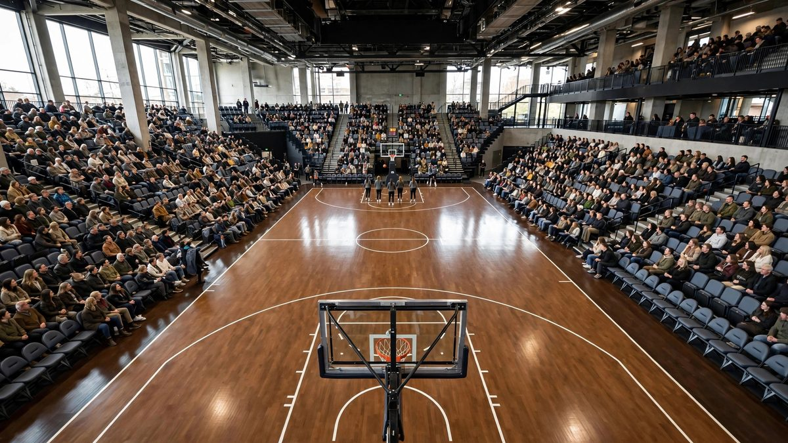

Finales de la WNBA, Juego 1: Dream en Valkyries, hora, TV y qué mirar
Las Golden State Valkyries, segundo cabeza de serie, reciben a las Atlanta Dream, cuarto cabeza de serie, en el Juego 1 de las Finales de la WNBA 2026 el sábado a las 3:30 p.m. ET en el Chase Center, en vivo por NBC y Peacock.

Puntos clave
- Actualizado 22:02 UTC, 17 de octubre de 2026.
- El Juego 1 de las Finales de la WNBA 2026 es el sábado 17 de octubre a las 3:30 p.m. ET en el Chase Center de San Francisco.
- Es un duelo que pocas personas habrían elegido al inicio de la temporada.
Actualizado 22:02 UTC, 17 de octubre de 2026. Golden State venció a Atlanta 68-64 en el Juego 1 de las Finales de la WNBA en el Chase Center y lidera la serie 1-0, informaron USA Today y Sportradar. Atlanta ganaba 22-14 tras el primer cuarto y 56-51 tras el tercero, pero Golden State superó a las Dream 17-8 en el cuarto cuarto, y Gabby Williams anotó dos tiros libres a cuatro segundos del final para cerrar el partido. Williams sumó 26 puntos, 16 de ellos solo en el segundo cuarto, su mejor marca en un cuarto. Allisha Gray lideró a Atlanta con 19 puntos en su primer partido desde el 4 de octubre, y Angel Reese sumó 14 puntos y 12 rebotes antes de cometer su quinta falta a 23,8 segundos del final. Kiah Stokes aportó nueve puntos, siete rebotes y cuatro tapones para Golden State, y Kaila Charles capturó 10 rebotes. La escolta de las Valkyries Tiffany Hayes dejó el partido al final del cuarto cuarto tras una fuerte caída al lanzarse a por un balón suelto, y salió al vestuario por su propio pie. La alera de Atlanta Rhyne Howard, que anotó 12 puntos, también cayó en el cuarto cuarto y se lastimó el hombro derecho, pero volvió tras un tiempo muerto. La derrota fue la primera de Atlanta en estos playoffs tras un inicio de 5-0. El Juego 2 es el lunes 19 de octubre en San Francisco.
El Juego 1 de las Finales de la WNBA 2026 es el sábado 17 de octubre a las 3:30 p.m. ET en el Chase Center de San Francisco. Es la 12:30 p.m. PT y las 2:30 p.m. CT. El partido se transmite por NBC y en streaming por Peacock. Las Golden State Valkyries, segundo cabeza de serie, reciben a las Atlanta Dream, cuarto cabeza de serie, en el primer partido de la serie.
Es un duelo que pocas personas habrían elegido al inicio de la temporada. Golden State está en solo su segunda temporada en la liga. Atlanta vuelve a las Finales por primera vez en 13 años. Un equipo dará el primer paso hacia el título el sábado por la tarde.
El duelo
Atlanta terminó la temporada regular con 30-14, el mejor registro de la Conferencia Este. Las Dream han mantenido ese nivel en la postemporada. Atlanta está 5-0 en los playoffs hasta ahora, sin derrotas en el camino a las Finales.
Golden State tomó un camino más duro en el papel y lo hizo ver claro. Las Valkyries barrieron a las campeonas defensoras Las Vegas Aces en las semifinales. Barrer a las campeonas es una declaración fuerte, y es una razón importante por la que Golden State entra al Juego 1 como ligera favorita. BetMGM pone a Golden State en -115.
La ventaja de local también importa aquí. Los dos primeros partidos son en el Chase Center, y Golden State intentará ganar en casa antes de que la serie se mueva a Atlanta para el Juego 3.
Atlanta busca su primer título
Esta es la cuarta aparición en las Finales en la historia de la franquicia de Atlanta. Las Dream perdieron las tres primeras. Todavía buscan su primer campeonato.
La espera ha sido larga. Atlanta llegó por última vez a esta etapa hace 13 años. Para las jugadoras y los aficionados, esta serie es una oportunidad para terminar una historia que antes se detuvo en el último paso.
Atlanta trae un núcleo profundo. Rhyne Howard, Allisha Gray, Jordin Canada y Angel Reese lideran al equipo. Reese ganó el premio a Jugadora Defensiva del Año esta temporada, y su trabajo en ese lado le da a Atlanta una identidad clara. Las Dream defienden, comparten la carga en ataque y aún no han perdido un partido de playoffs.
La salud es la única pregunta para Atlanta. Gray se lastimó el dedo anular izquierdo, se perdió dos partidos de playoffs y dijo que está día a día de cara a las Finales. Su estado importa. Gray es una anotadora y defensora clave, y Atlanta es un equipo distinto cuando ella está limitada o fuera. Esté atento a las primeras novedades del sábado sobre cuánto puede jugar.
Golden State, en el año dos
Golden State se unió a la liga como equipo de expansión en 2025. En su primer año, el equipo perdió en la primera ronda de los playoffs. Un año después, recibe el Juego 1 de las Finales.
Ese ascenso es rápido por cualquier medida. Los equipos de expansión suelen necesitar años para construir una plantilla y un sistema. Las Valkyries lo han hecho en dos temporadas, y la barrida sobre Las Vegas mostró que pueden vencer al mejor equipo en el escenario más grande.
Gabby Williams ha liderado el camino en los playoffs. Promedia 22.7 puntos por partido en la postemporada con Golden State. Si sigue anotando a ese ritmo, Atlanta tendrá que cambiar su defensa para frenarla, y eso abre espacio para el resto de las Valkyries.
Kayla Thornton aporta la experiencia que este equipo joven necesita. Thornton ganó un título de la WNBA con New York Liberty en 2024. Hizo su primer equipo All-Star este año con las Valkyries. Sabe lo que una serie de Finales pide a una jugadora, día tras día.
Cifras clave
Registro de Atlanta: 30-14 en la temporada regular, el mejor del Este. Registro de Atlanta en playoffs: 5-0. Líder anotadora de Golden State en playoffs: Gabby Williams con 22.7 puntos por partido. Cabezas de serie: Golden State No. 2, Atlanta No. 4. Cuotas: Golden State -115 en BetMGM. Apariciones de Atlanta en Finales: cuatro, sin título todavía.
Calendario completo de las Finales
Juego 1: sábado 17 de octubre en Golden State, 3:30 p.m. ET, NBC y Peacock. Juego 2: lunes 19 de octubre en Golden State, 8 p.m. ET, por USA, Peacock y CNBC. Juego 3: miércoles 21 de octubre en Atlanta, 8 p.m. ET. Juego 4: sábado 24 de octubre en Atlanta, 1 p.m. ET, por NBC. Juego 5, si es necesario: lunes 26 de octubre en Golden State. Juego 6, si es necesario: jueves 29 de octubre en Atlanta. Juego 7, si es necesario: sábado 31 de octubre en Golden State.
Por qué importa
Para Atlanta, esta serie es historia. Un primer título cambiaría cómo se ve a la franquicia y recompensaría una larga espera de sus aficionados. Para Golden State, un título en el año dos marcaría un nuevo nivel para la rapidez con la que un equipo nuevo puede llegar a la cima.
También importa para la liga. Una serie cerrada de Finales entre un equipo nuevo con una afición local ruidosa y un núcleo veterano que busca su primer anillo es el tipo de serie que atrae a nuevos espectadores. El Juego 1 marca el tono. La ganadora toma el control, la perdedora tiene que responder rápido en el Juego 2 el lunes.
Qué sigue
Después del Juego 1 el sábado, los equipos se quedan en San Francisco para el Juego 2 el lunes 19 de octubre. La serie se mueve luego a Atlanta para el Juego 3 el miércoles 21 de octubre y el Juego 4 el sábado 24 de octubre. Si la serie se alarga, vuelve a Golden State para un posible Juego 5 y un posible Juego 7.
Para el sábado, mire tres cosas. Primero, Gray y su dedo. Segundo, Williams y si Atlanta puede mantenerla por debajo de su promedio de playoffs. Tercero, el inicio. Atlanta no ha perdido en estos playoffs, y Golden State tiene la ventaja de local. El primer cuarto mostrará qué racha pesa más.
Cronología
- 2025Las Golden State Valkyries se unen a la WNBA como equipo de expansión y pierden en la primera ronda de los playoffs.
- Oct 17, 2026Juego 1 de las Finales de la WNBA, Atlanta en Golden State, 3:30 p.m. ET en el Chase Center.
- Oct 17, 2026Golden State venció a Atlanta 68-64 en el Juego 1 en el Chase Center y lidera las Finales 1-0. Gabby Williams anotó 26 puntos, y Atlanta perdió por primera vez en estos playoffs.
- Oct 19, 2026Juego 2 en Golden State.
- Oct 21, 2026Juego 3 en Atlanta, el primer partido de Finales en Atlanta en 13 años.
Fuentes
- USA Today: Valkyries vs Dream, WNBA Finals time, TV, how to watch
- USA Today: When does the 2026 WNBA Finals start?
- NorthJersey.com: Dream vs Valkyries in 2026 WNBA Finals, schedule and prediction
- El Paso Times: Kayla Thornton eyes second ring with the Valkyries
- Sportradar: Golden State Valkyries vs Atlanta Dream, WNBA Finals Game 1 final score and box score